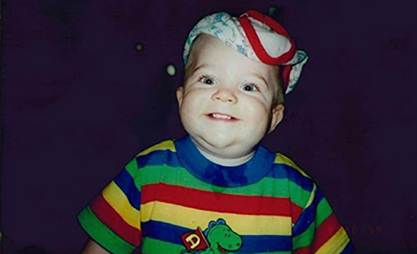
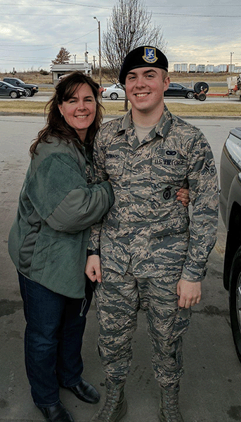
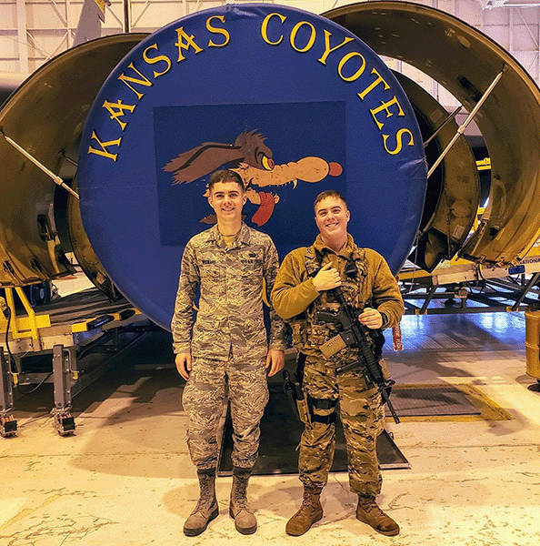
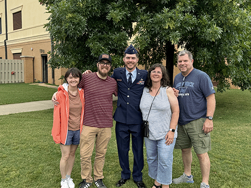

Early Life:

I was born in Lawrence, Kansas on February 22, 1998. I grew up in DeSoto, Kansas and went to DeSoto schools until 7th grade. That year, I switched to the Perry-Lecompton school district. My dad was the middle school principal so I'd just ride to school and back with him each day.
I was a pretty quiet kid growing up. I rarely got in trouble, always followed the rules and kept to myself. At home I'd mostly play in the woods across the street but on the weekends my brother and I were allowed to play video games, so that's often how we spent our weekends.
High school and post-graduation:
I attended Perry-Lecompton High School (PLHS) for all four years of high school.
During my senior year, I enlisted into the U.S. Air Force with orders for basic training over the summer.
On July 19, 2016 I went to the airport and left for basic training (BMT).
After BMT graduation, I attended the Security Forces Academy at Lackland AFB in San Antonio, Texas.
I graduated from the academy in January of 2017.

Post Air Force
I served in the Air Force for a total of four years. I originally intended on serving a full forty years, but due to significant medical issues, I had to reevaluate my life plan and decided that I needed to change the direction of things. So I separated from the Air Force in November of 2019. Luckily, I was able to immediately find a new job so my income never ceased. I got a job working at KVC Health Systems. Specifically, I worked as a Behavioral Health Technician for a children psychiactric ward. This was an incredibly difficult job, but I enjoyed it. It was a totally new career field for me but there were two reasons for not continuing any kind of security or police job. The first reason was that the mental stress of the job removed a lot of ambition I had for the job field. I recognized the amount of stress I had been under and that I didn't want to continue that while I had a chance to get out of it. The second reason was that my body simply couldn't keep up with that kind of physicality anymore. I had developed numerous back and joint issues that I still struggle with to this day. For instance, I can't wear a plate carrier anymore because while wearing my military plate carrier for 16+ hours every day, I developed something called "Rolling Rib Syndrome" - my ribs move around and pop - as my sternum does too.

Insert COVID-19: The metal rod stuck in the wheel spokes of my life.
Due to COVID-19 lockdowns, my job was shut down. It ended up closing entirely.
Of course, everywhere else was affected by this pandemic, so I was unable to find any work for the next year and a half or so. This eventually led to me putting deep thought into what
career field I wanted to enter. Seeing as I already had experience with computers, software and coding, I decided on the IT career field. I knew this meant I'd need to go to college, something
I skipped to enlist. But from that point, I knew that was the career field I really wanted to do; so I began restructuring to make college possible.
My perspective of life
Life is full of inconveniences, struggles and difficulties. But that’s part of what makes life so great.
The sound of an ambulance is loud and irritating until it’s the one pulling into your driveway. A wailing infant in public is piercing and annoying until you find out you won’t be able to have one. The dishes overflowing in your sink is an overwhelming task until you’re setting the table for just yourself. The gym is too time-consuming and expensive until your body stops doing what it used to. Your dad’s story he tells you every Christmas is boring until the day you’d give just about anything to hear it one more time. Your mom asking you to text her when you get home is “just one more thing” you have to do until the day she’s not there for you to text.
If you never experienced difficult times, there’d be no way to know when you were going through the good times. Sometimes it can be difficult to recognize the value of things until you’ve gone without them. I’ve been blessed enough to endure some very difficult times - and because of it, I can recognize the value of everything and everyone in my life while I still have them. I realized that all the little things that were making me feel like I was going crazy were actually the very things people were praying for me to endure; I was just looking at it from the entirely wrong perspective so wasn’t able to appreciate anything. All those things; the noise, the traffic, the weather, the messes, the people who needed something from me - those weren't the things getting in the way of my life, that was my life.
I also realized that I needed to stop drowning myself in temporary stress. The "catch" is: every stress is temporary stress. That's both the good and bad news for life: it's temporary. If things are good? Enjoy it - it won't last forever. If things are going bad? Hang in there - it won't last forever.

Despite everything I've encountered, and despite any way my family may have driven me nuts over the years, I consider myself incredibly blessed to have the family I have.
Reach out to me if you'd like to know more information!
Email me